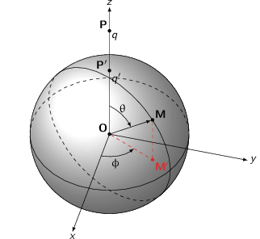
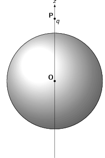
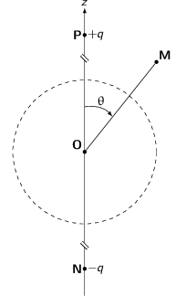
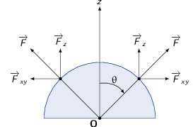
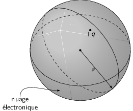
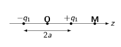
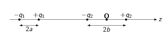

TD2 : Électrostatique dans le vide
1 Rayon classique de l'électron
- Calculer l'énergie électrostatique d'une boule de rayon \(R\), chargée en volume avec la densité volumique uniforme \(\rho\).
L'énergie électrostatique \(\mathcal{U}_e\) se calcule en intégrant la densité volumique d'énergie électromagnétique \(u=\epsilon_0\frac{E^2}{2}+\frac{B^2}{2\mu_0}\) qui, en l'absence de champ magnétique, est uniquement de nature électrostatique soit
\begin{align*} \mathcal{U}_e=\iiint_{\forall\text{espace}}\epsilon_0\frac{E^2}{2}d\tau \end{align*}Il s'agit donc de calculer quel champ électrique génère la distribution de charge \(\rho\). On applique pour cela le théorème de Gauss i.e.
\begin{align*} \iiint_V\div\vv{E}\,d\tau=\varoiint_{S/V}\vv{E}.\,d\vv{S}&=\iiint_V\frac{\rho}{\epsilon_0}d\tau=\frac{\Upsigma Q_\text{int.}}{\epsilon_0} \end{align*}Le choix de la surface fermée \(S\) dépend de l'orientation de \(\vv{E}\) et de ses dépendances. Ainsi, dans le référentiel de coordonnées sphériques \((r,\theta,\phi)\), tout plan contenant le vecteur \(\vv{u}_r\) est plan de symétrie de la distribution de charge : le champ électrostatique \(\vv{E}\) appartient nécessairement à ces plans de symétrie et \(\vv{E}\) est donc parallèle à \(\vv{u}_r\). Par ailleurs, le système est invariant par rotation d'angles \(\theta\) et \(\phi\). Le champ \(\vv{E}\) peut donc s'écrire sous la forme \(\vv{E}=E(r)\vv{u}_r\).
La surface fermée \(S\) dite de Gauss est alors une sphère de rayon \(r\) et deux situations sont à distinguer :
à l'intérieur de la boule \(r\leq R\)
\begin{align*} \varoiint_{S/V}\vv{E}.\,d\vv{S}=E(r)\,4\pi r^2&=\iiint_V\frac{\rho}{\epsilon_0}d\tau\\ &=\frac{\rho}{\epsilon_0}\,\frac{4}{3}\pi r^3\\ \vv{E}_\text{int.}&=\frac{\rho r}{3\epsilon_0}\vv{u}_r \end{align*}à l'extérieur de la boule \(r>R\)
\begin{align*} \varoiint_{S/V}\vv{E}.\,d\vv{S}=E(r)\,4\pi r^2&=\iiint_V\frac{\rho}{\epsilon_0}d\tau\\ &=\frac{\rho}{\epsilon_0}\,\frac{4}{3}\pi R^3\\ \vv{E}_\text{ext.}&=\frac{\rho R^3}{3\epsilon_0\,r^2}\vv{u}_r \end{align*}
L'énergie électrostatique ainsi stockée dans cette boule est
\begin{align*} \mathcal{U}_e&=\iiint_{\forall\text{espace}}\epsilon_0\frac{E^2}{2}d\tau\\ &=\int_0^{2\pi}\int_0^{\pi}\int_0^\infty\epsilon_0\frac{E^2}{2}\,r^2\sin\theta drd\theta d\phi\\ &=\frac{4\pi}{2}\epsilon_0\times\left(\int_0^RE^2_\text{int.}\,r^2dr+\int_R^\infty E^2_\text{ext.}\,r^2dr\right)\\ &=2\pi\epsilon_0\times\left(\int_0^R\frac{\rho^2}{9\epsilon_0^2}r^2\,r^2dr+\int_R^\infty\frac{\rho^2R^6}{9\epsilon_0^2r^4}\,r^2dr\right)\\ &=2\pi\epsilon_0\times\left(\frac{\rho^2}{9\epsilon_0^2}\frac{R^5}{5}+\frac{\rho^2R^6}{9\epsilon_0^2}\frac{1}{R}\right)\\ &=\frac{2\pi\rho^2R^5}{9\epsilon_0}\left(\frac{1}{5}+1\right)=\frac{4\pi\rho^2R^5}{15\epsilon_0} \end{align*}En fonction de la charge totale \(Q\) de la boule soit \(Q=\frac{4}{3}\pi R^3\,\rho\), on obtient
\begin{align*} \mathcal{U}_e&=\frac{3Q^2}{20\pi\epsilon_0 R} \end{align*}
- Un électron de masse \(m_e\) et de charge \(-e\) (\(e>0\)) est assimilé à une telle distribution. Définir et calculer le rayon classique de l'électron \(R_e\). Commenter la valeur numérique.
On assimile l'énergie électrostatique stockée dans un électron de rayon \(R_e\) et de charge \(Q=-e\) à l'énergie de masse ou au repos de l'électron soit
\begin{align*} \mathcal{U}_e&=m_ec^2=\frac{3e^2}{20\pi\epsilon_0 R_e} \end{align*}Application numérique :
\begin{align*} R_e&=\frac{3e^2}{20\pi\epsilon_0\,m_ec^2}\simeq\unit[1.7]{fm} \end{align*}L'ordre de grandeur ne semble pas aberrant mais il faut tenir des effets quantiques qui apparaissent à très petites échelles.
- En réalité, bien avant d'arriver à des distances de l'ordre de \(R_e\), d'autres phénomènes sont à prendre en compte : en préciser la nature. Quelle longueur caractéristique fixe la limite inférieure de validité de la théorie classique des champs pour un électron ? En donner l'ordre de grandeur.
Il faut appliquer un traitement quantique aux systèmes dont les dimensions caractéristiques sont inférieures à la longueur d'onde de de Broglie \(\lambda=\frac{h}{p}\). Cette dimension fixe la limite entre traitement classique et traitement quantique. La valeur caractéristique de \(\lambda=\frac{h}{m_ec}\simeq \unit[2.4\cdot10^{-12}]{m}\).
2 Condensateur cylindrique
On considère un condensateur constitué par un cylindre métallique de rayon \(a\) entouré par un autre cylindre creux, de même axe et de rayon \(b\). Ces deux cylindres constituent les deux armatures du condensateur, l'amrature intérieure est au potentiel \(V_a\) et a une charge \(Q_a\) et l'armature extérieure est au potentiel \(V_b=0\) et a une charge \(Q_b=-Q_a\). Le milieu remplissant l'espace entre les deux armatures est le vide. Leur longueur est \(h\gg b\), de telle sorte qu'on peut négliger les effets de bords. À l'aide du théorème de Gauss, calculer le champ électrique dans le condensateur. En déduire la capacité par unité de longueur \(C\) du condensateur.
Application numérique : Calculer \(C\) pour \(a=1\) mm et \(b=8\) mm.
En considérant \(h\gg a,b\), le problème est invariant par translation le long de l'axe des cylindres. Par ailleurs, le problème est invariant par rotation soit \(E(M)=E(r)\). En coordonnées cylindriques, les plans \((\vv{u}_r,\vv{u}_\theta)\) et \((\vv{u}_r,\vv{u}_z)\) sont des plans de symétrie de la distribution de charge. On déduit que le champ électrique s'écrit
\begin{align*} \vv{E}(M)=E(r)\vv{u}_r \end{align*}Le choix de la surface de Gauss est alors un cylindre de rayon \(r\) et de hauteur \(h\)
\begin{align*} \varoiint_S\vv{E}.\,d\vv{S}&=\iiint_V\frac{\rho}{\epsilon_0}d\tau=\frac{\Upsigma Q_\text{int.}}{\epsilon_0}\\ E(r)\times2\pi rh&=\frac{\Upsigma Q_\text{int.}}{\epsilon_0}\\ \vv{E}(M)&=\frac{\Upsigma Q_\text{int.}}{2\pi\epsilon_0}\times\frac{1}{rh}\vv{u}_r \end{align*}- pour \(r < a\), \(Q_\text{int.}=0\) d'où \(\vv{E}(r < a)=\vv{0}\)
- pour \(a < r < b\), \(Q_\text{int.}=Q_a\) d'où \(\vv{E}(a < r < b)=\frac{Q_a}{2\pi\epsilon_0rh}\vv{u}_r\)
- pour \(r>b\), \(Q_\text{int.}=Q_a+Q_b=0\) d'où \(\vv{E}(r>b)=\vv{0}\)
La capacité d'un condensateur \(C\) est égale au rapport de la charge dans le condensateur sur le potentiel électrique appliqué aux bornes du condensateur soit \(C=\tfrac{Q}{V}\). Par ailleurs, le champ électrique \(\vv{E}\) est égal au gradient du potentiel électrique \(\vv{E}=-\grad\,V=-\tfrac{dV}{dr}\vv{u}_r\). Soit
\begin{align*} -\frac{dV}{dr}&=\frac{Q_a}{2\pi\epsilon_0rh}\\ -\int_{V_a}^{V_b}dV&=\int_a^b\frac{Q_a}{2\pi\epsilon_0h}\frac{dr}{r}\\ -V_b+V_a&=\frac{Q_a}{2\pi\epsilon_0h}\ln\frac{b}{a}\\ V_a&=\frac{Q_a}{2\pi\epsilon_0h}\ln\frac{b}{a}=\frac{Q_a}{C}\\ C&=\frac{2\pi\epsilon_0h}{\ln\frac{b}{a}} \end{align*}Application numérique
\begin{align*} \frac{C}{h}=\frac{2\pi\epsilon_0}{\ln\frac{b}{a}}=\frac{2\pi\times8.85\,10^{-12}}{\ln8}=\unit[2.7\,10^{-11}]{F/m} \end{align*}3 Boule conductrice en présence d'une charge ponctuelle : méthode des images

Soit une boule conductrice, de centre \(O\), de rayon \(R\). On place une charge \(q\) sur l'axe \(Oz\) au point \(P\). On étudiera le potentiel et le champ créés par cette charge.
- On impose le potentiel \(V=0\) en un point de la surface de la boule.
- Quel est le potentiel dans l'ensemble de la boule ? Par des considérations de symétrie, simplifier l'expression du champ électrostatique \(\vv{E}\) (direction et dépendance des composantes par rapport aux différentes coordonées). Quel système de coordonnées a-t-on intérêt à adopter ?
- Montrer qu'il est possible d'obtenir \(V=0\) sur la surface de la boule de centre \(O\) et de rayon \(R\) dans le vide en remplaçant la boule conductrice par une deuxième charge \(q'\) sur l'axe \(Oz\), en plus de la charge \(q\) initiale. Que vaut \(V(\infty)\) ? Déterminer la valeur et la position de \(q'\).
- Rappeler l'équation de Poisson. Quelles sont les conditions aux limites imposées par la boule ? En déduire que pour \(r > R\), le champ créé par la charge \(q\) en présence de la boule est le même que celui créé par les charges \(q\) et \(q'\).
- Calculer \(\vv{E}\) au voisinage de la sphère. Rappeler les conditions de continuité à la traversée d'une surface chargée. En déduire la densité surfacique de charges portée par la surface de la boule conductrice.
- Calculer la charge totale portée par la boule conductrice. En utilisant le théorème de Gauss, montrer que le résultat était prévisible.
- Calculer la force qu'exerce la charge \(q\) sur la sphère conductrice.
L'absence de charges libres dans le volume d'un conducteur (les charges sont surfaciques) implique que le champ électrique \(\vv{E}_\text{int.}\) soit nul (théorème de Gauss). Le potentiel électrique \(V_\text{int.}\) déduit de \(\vv{E}_\text{int.}=-\grad\,V_\text{int}\) est par conséquent constant. \(V_\text{int.}(r=R)\) étant par ailleurs nul
\begin{align*} V_\text{int.}=V(r\leq R)=0 \end{align*}Le problème est invariant par rotation autour de l'axe \(Oz\) et le plan \((\vv{u}_r,\vv{u}_z)\) est plan de symétrie de la distribution de charge. Le champ électrostatique \(\vv{E}\) exprimé dans le système de coordonnées cylindriques \(M=(r,\theta,z)\), a donc pour expression
\begin{align*} \vv{E}(M)=E_r(r,z)\vv{u}_r+E_z(r,z)\vv{u}_z \end{align*}En raison de la symétrie du problème, une charge fictive \(q'\) est nécessairement sur l'axe \(Oz\). Le potentiel alors généré en tout point \(M\) de l'espace est la somme des potentiels induits par chaque particule soit
\begin{align*} V(M)=\frac{1}{4\pi\epsilon_0}\left(\frac{q}{PM}+\frac{q'}{P' M}\right) \end{align*}où \(P'\) est la position de la charge \(q'\). Le potentiel pour \(r\to\infty\) est nul : \(V(\infty)=0\). La condition selon laquelle le potentiel est nul en tout point \(M\) de la surface de la sphère implique
\begin{align*} \frac{q}{PM}=-\frac{q'}{P' M} \end{align*}\(q'\) est donc de signe opposé à \(q\). Par suite, on déduit que
\begin{align*} q\,P' M &= -q'\,PM\\ q^2\,P' M^2 &=q^{\prime2}\,PM^2\\ q^2\,\vv{P' M}^2 &=q^{\prime2}\,\vv{PM}^2\\ q^2\,\left(\vv{P' O}+\vv{OM}\right)^2 &=q^{\prime2}\,\left(\vv{PO}+\vv{OM}\right)^2\\ \underbrace{q^2P' O^2-q^{\prime2}PO^2+q^2R^2-q^{\prime2}R^2}_{\text{\(\unicode{x2460}\)}}&=\underbrace{q^{\prime2}2\vv{PO}.\vv{OM}-q^22\vv{P' O}.\vv{OM}}_{\text{\(\unicode{x2461}\)}} \end{align*}Le premier membre de l'équation est indépendant de \(M\) et est donc constant. Le second membre dépend de \(M\) mais doit demeurer constant pour tout \(M\) appartenant à la surface de la sphère. Cette égalité est ainsi vérifiée pour \(M(r,\theta,z=0)\) soit \(\vv{OM}\perp\vv{u}_z\). On obtient \(\unicode{x2460}\)=\(\unicode{x2461}\)=0 et on déduit
\begin{align*} \text{\(\unicode{x2461}\)}=0&=2\vv{OM}.\left(q^{\prime2}\vv{PO}-q^2\vv{P' O}\right)\\ \vv{P' O}&=\frac{q^{\prime2}}{q^2}\vv{PO}\parallel\vv{u}_z \end{align*}À partir du premier membre \(\unicode{x2460}\), on déduit
\begin{align*} \text{\(\unicode{x2460}\)}=0&=q^2P' O^2-q^{\prime2}PO^2+q^2R^2-q^{\prime2}R^2\\ R^2\left(q^{\prime2}-q^2\right)&=q^2P' O^2-q^{\prime2}PO^2\\ &=q^2\times\frac{q^{\prime4}}{q^4}PO^2-q^{\prime2}PO^2\\ &=q^{\prime2}PO^2\left(\frac{q^{\prime2}}{q^2}-1\right)\\ R^2&=PO^2\times\left(\frac{q'}{q}\right)^2\\ q'&=-\frac{qR}{PO}\\ P' O&=\frac{R^2}{PO}\leq R \end{align*}À partir de l'équation locale \(\div\vv{E}=\tfrac{\rho}{\epsilon_0}\) et de l'expression du potentiel électrique \(\vv{E}=-\grad V\), on obtient l'équation de Poisson
\begin{align*} -\div\left(\grad V\right)&=\frac{\rho}{\epsilon_0}\\ -\Delta V&=\frac{\rho}{\epsilon_0}\\ \Delta V+\frac{\rho}{\epsilon_0}&=0 \end{align*}Les conditions aux limites imposées par la boule sont que le potentiel électrique en tout point de la surface soit nul \(V(r=R)=0\). Pour tout point \(r>R\), le problème "charge \(q\) + boule conductrice" est équivalent à la situation "charge \(q\) + charge \(q'\)" du fait que les deux situations obéissent à la même équation de Poisson et satisfont aux mêmes conditions aux limites \(V(r=R)=0\). Le théorème d'unicité implique donc les mêmes solutions pour chacune des représentations. Cette équivalence n'est vrai que pour \(r>R\) car à l'intérieur de la boule le champ électrostatique demeure nul ce qui n'est pas le cas dans la situation "charge \(q\) + charge \(q'\)".
 
Calcul du champ \(\vv{E}(r\geq R)\) : combinaison des champs coulombiens de chacune des charges \(q\) et \(q'\)
\begin{align*} \vv{E}(M)&=\frac{1}{4\pi\epsilon_0}\left(\frac{q}{PM^3}\vv{PM}+\frac{q'}{P' M^3}\vv{P' M}\right)\\ &=\frac{1}{4\pi\epsilon_0}\left[\left(\frac{q}{PM^3}+\frac{q'}{P' M^3}\right)\vv{OM}+\underbrace{\frac{q\vv{PO}}{PM^3}+\frac{q'\vv{P' O}}{P' M^3}}_{\text{\(\unicode{x2460}\)}}\right] \end{align*}Sachant que \(\vv{P' O}=\frac{q^{\prime2}}{q^2}\vv{PO}\) et \(P' M=-\frac{q'}{q}PM\), l'expression \(\unicode{x2460}\) devient
\begin{align*} \text{\(\unicode{x2460}\)}&=\frac{q\vv{PO}}{PM^3}+\frac{q'\vv{P' O}}{P' M^3}\\ &=\frac{q\vv{PO}}{PM^3}+\frac{q'\times q^{\prime2}}{q^2}\times\frac{\vv{PO}}{-q^{\prime3}}\times\frac{q^3}{PM^3}\\ &=0 \end{align*}soit pour \(M\in\) sphère
\begin{align*} \vv{E}(M)&=\frac{R\vv{u}_r}{4\pi\epsilon_0}\left(\frac{q}{PM^3}+\frac{q'}{P' M^3}\right)\\ &=\frac{q\vv{R}}{4\pi\epsilon_0\,PM^3}\times\left(1-\frac{q^2}{q^{\prime2}}\right)\\ &=\frac{q\vv{R}}{4\pi\epsilon_0\,PM^3}\times\left(1-\frac{PO^2}{R^2}\right) \end{align*}Conditions de continuité du champ électrique au passage d'une surface
\begin{align*} \vv{n}_{\tiny1\to2}.\left(\vv{E}_2-\vv{E}_1\right)&=\frac{\sigma}{\epsilon_0}\rightarrow\text{discontinuité de la composante normale}\\ \vv{n}_{\tiny1\to2}\times\left(\vv{E}_2-\vv{E}_1\right)&=\vv{0}\rightarrow\text{continuité de la composante tangentielle} \end{align*}Étant donné que \(\vv{E}_\text{int.}=\vv{E}_1=\vv{0}\), la densité surfacique de charge est égale à
\begin{align*} \vv{E}(M\in\text{sphère})&=\frac{\sigma}{\epsilon_0}\vv{u}_r\\ \sigma&=\frac{qR}{4\pi}\left(1-\frac{PO^2}{R^2}\right)\times\frac{1}{PM^3} \end{align*}La charge totale \(Q_\text{tot.}\) de la boule conductrice est donc
\begin{align*} Q_\text{tot.}&=\int_0^{2\pi}d\phi\int_0^\pi d\theta\times R^2\sin\theta\times\sigma(\theta)\\ &=\frac{2\pi qR^3}{4\pi R^2}\left(R^2-PO^2\right)\times\int_0^\pi d\theta\frac{\sin\theta}{PM^3}\\ &\text{avec }PM^2=PO^2+OM^2+2\vv{PO}.\vv{OM}=PO^2+R^2-2R\,PO\cos\theta\\ Q_\text{tot.}&=\frac{qR(R^2-PO^2)}{2}\times\underbrace{\int_0^\pi\frac{\sin\theta d\theta}{\left(PO^2+R^2-2R\,PO\cos\theta\right)^{3/2}}}_{\text{\(\unicode{x2460}\)}} \end{align*}Pour calculer \(\unicode{x2460}\), on pose \(x=\cos\theta\) avec \(x\in[1,-1]\) et \(dx=-\sin\theta d\theta\)
\begin{align*} \text{\(\unicode{x2460}\)}&=\int_1^{-1}\frac{-dx}{\left(PO^2+R^2-2R\,POx\right)^{3/2}}\\ &\text{or }\int\frac{dx}{(b+ax)^{3/2}}=\frac{1}{(b+ax)^{1/2}}\times-\frac{2}{a}\\ \text{\(\unicode{x2460}\)}&=\frac{1}{R\,PO}\left(\frac{1}{\surd PO^2+R^2-2R\,PO}-\frac{1}{\surd PO^2+R^2+2R\,PO}\right)\\ &=\frac{1}{R\,PO}\left(\frac{1}{PO-R}-\frac{1}{PO+R}\right)\\ &=\frac{1}{R\,PO}\left(\frac{2R}{PO^2-R^2}\right) \end{align*}Finalement \(Q_\text{tot.}\) devient
\begin{align*} Q_\text{tot.}&=\frac{qR(R^2-PO^2)}{2}\times\frac{1}{R\,PO}\times\frac{2R}{PO^2-R^2}\\ &=-\frac{qR}{PO}=q' \end{align*}Le théorème de Gauss impose que \(Q_\text{tot.}\) soit égal à la somme des charges à l'intérieur de la sphère. La charge fictive \(q'\) est par construction à l'intérieur de la sphère d'où \(Q_\text{tot.}=q'\).
Calcul de la force exercée par la charge \(q\) sur \(q'\) ≡ à calculer la force exercée par la charge \(q\) sur la boule conductrice.
\begin{align*} \vv{F}_{q\to q'}&=\vv{F}_{q\to\text{boule}}\\ &=q'\vv{E}_{q\to q'}\\ &=\frac{q' q}{4\pi\epsilon_0}\times\frac{\vv{PP'}}{PP^{\prime3}}=\frac{q' q}{4\pi\epsilon_0}\times\frac{-\vv{u}_z}{PP^{\prime2}}\\ &\text{avec }PP^{\prime2}=\left(PO-OP'\right)^2=\left(PO-\frac{R^2}{PO}\right)^2=\frac{(PO^2-R^2)^2}{PO^2}\\ \vv{F}_{q\to\text{boule}}&=-\frac{qq'}{4\pi\epsilon_0}\times\frac{PO^2}{\left(PO^2-R^2\right)^2}\vv{u}_z\\ &=\frac{q^2}{4\pi\epsilon_0}\frac{R\,PO}{\left(PO^2-R^2\right)^2}\vv{u}_z \end{align*}
- La boule conductrice est maintenant au potentiel \(V_0\neq0\)
- En utilisant le principe de superposition, montrer qu'on peut vérifier les nouvelles conditions aux limites en ajoutant une troisième charge \(q''\). Déterminer la position de \(q''\) et sa valeur.
- Calculer la charge totale \(Q\) portée par la boule conductrice. Sachant que \(Q=0\), déterminer \(V_0\) en présence de la charge \(q\).
Le principe de superposition implique
\begin{align*} V(M)=V_0=\frac{1}{4\pi\epsilon_0}\left(\underbrace{\frac{q}{PM}+\frac{q'}{P'M}}_{=0}+\frac{q''}{P''M}\right) \end{align*}soit
\begin{align*} q''=4\pi\epsilon_0V_0\times P''M=\text{constante} \end{align*}impliquant que \(P''\equiv O\) et donc \(q''=4\pi\epsilon_0RV_0\)
Les charges fictives/virtuelles \(q'\) et \(q''\) sont à l'intérieur de la boule conductrice d'où \(Q_\text{boule}=q'+q''=0\). La charge \(q''\) est ainsi égale à \(-q'=\frac{qR}{PO}\) soit un potentiel \(V_0\) égal à
\begin{align*} 4\pi\epsilon_0RV_0&=-q'=\frac{qR}{PO}\\ V_0&=\frac{1}{4\pi\epsilon_0}\times\frac{q}{PO} \end{align*}i.e. le potentiel généré en \(O\) par la particule \(q\).
- On place une boule conductrice dans un champ uniforme créé par deux
charges \(+q\) et \(-q\) respectivement placées en \(+Z\) et \(-Z\), où \(Z\gg R\).
- Déterminer le champ \(\vv{E}\) crée par \(+q\) et \(-q\) en l'absence de la boule conductrice. Montrer qu'au 1er ordre, \(\vv{E}\) peut être considéré comme uniforme sur le volume de la boule.
- Calculer la densité surfacique de charge \(\sigma\) qui apparaît sur la boule conductrice en présence de \(+q\) et \(-q\). Le champ reste-t-il uniforme au voisinage de la boule ?
- En déduire le champ créé à l'intérieur d'une sphère de rayon \(R\), portant la densité surfacique de charge \(\sigma_0\cos\theta\).
- Enfin on suppose que la boule est coupée en deux par le plan \(xOy\). Elle est toujours soumise à un champ électrostatique uniforme. Calculer la force qui s'exerce sur chacun des hémisphères en utilisant la pression électrostatique.
Boule conductrice dans un champ électrostatique uniforme

Les champs électrostatiques créés par chaque charge se superposent en \(M\)
\begin{align*} \vv{E}(M)&=\frac{1}{4\pi\epsilon_0}\left(\frac{q}{PM^3}\vv{PM}-\frac{q}{NM^3}\vv{NM}\right)\\ \text{avec }\vv{PM}&=\vv{PO}+\vv{OM}\\ PM^3&=\left(Z^2+r^2+2\vv{PO}.\vv{OM}\right)^{3/2}\\ PM^3&=Z^3\left(1-2\frac{r}{Z}\cos\theta+\frac{r^2}{Z^2}\right)^{3/2} \end{align*}Pour \(r\leq R\), l'expression de la longueur \(PM\) devient au premier ordre en \(\frac{r}{Z}\) (\(Z\gg R\))
\begin{align*} PM^3&\simeq Z^3\left(1-2\frac{r}{Z}\cos\theta\right)^{3/2}\\ \frac{1}{PM^3}&\simeq\frac{1}{Z^3}\left(1+3\frac{r}{Z}\cos\theta\right) \end{align*}De même
\begin{align*} \frac{1}{NM^3}&\simeq\frac{1}{Z^3}\left(1-3\frac{r}{Z}\cos\theta\right) \end{align*}Le champ électrique au voisinage de la boule conductrice devient
\begin{eqnarray*} \vv{E}(r\leq R)&=\frac{1}{4\pi\epsilon_0}\times\frac{q}{Z^3}\times&\left[\vv{OM}\left(\cancel{1}+3\frac{r}{Z}\cos\theta\right)-\vv{OM}\left(\cancel{1}-3\frac{r}{Z}\cos\theta\right)\right.\\ &&\left.+\vv{PO}\left(1+3\frac{r}{Z}\cos\theta\right)-\vv{NO}\left(1-3\frac{r}{Z}\cos\theta\right)\right]\\ &=\frac{1}{4\pi\epsilon_0}\times\frac{q}{Z^3}\times&\left[\cancel{6\frac{r^2}{Z}}(\propto\tfrac{r^2}{Z^2}\ll1)\cos\theta\vv{u}_r\right.\\ &&\left.+\vv{PO}\left(1+3\frac{r}{Z}\cos\theta\right)-\vv{NO}\left(1-3\frac{r}{Z}\cos\theta\right)\right]\\ &=\frac{1}{4\pi\epsilon_0}\times\frac{q}{Z^3}\times&\left[\vv{PO}\left(1+\cancel{3\frac{r}{Z}\cos\theta}\right)-\vv{NO}\left(1-\cancel{3\frac{r}{Z}\cos\theta}\right)\right]\\ &=\frac{1}{4\pi\epsilon_0}\times\frac{q}{Z^3}\vv{PN}\\ &=-\frac{1}{4\pi\epsilon_0}\times\frac{2q}{Z^2}\vv{u}_z&\rightarrow\text{champ électrique constant pour }r\leq R\\ \end{eqnarray*}Le champ ainsi généré correspond au champ électrique généré par un dipôle électrique \(\vv{p}=q\vv{PN}\) (où la charge \(q\) est en \(P\) et la charge \(-q\) est en \(N\), cf. Cours Chapitre 2, page 44).
Nous avons établi à la question 1.d) qu'en présence d'une charge ponctuelle \(q\), la densité surfacique de charge était
\begin{align*} \sigma=\frac{q}{4\pi}\times\frac{R^2-PO^2}{R}\times\frac{1}{PM^3} \end{align*}où \(P\) est la position de la charge \(q\) et \(M\) est un point situé à la surface de la boule. On déduit ainsi que la charge \(+q\) génère une densité surfacique
\begin{align*} \sigma_+=\frac{q}{4\pi}\times\frac{R^2-PO^2}{R}\times\frac{1}{PM^3} \end{align*}tandis que la charge \(-q\) placée en \(N\) implique une densité surfacique
\begin{align*} \sigma_-=\frac{-q}{4\pi}\times\frac{R^2-NO^2}{R}\times\frac{1}{NM^3} \end{align*}En ne considérant toujours que le premier ordre en \(\frac{R}{Z}\), on obtient une densité surfacique totale
\begin{align*} \sigma_\text{totale}&=\sigma_++\sigma_-\\ &\simeq\frac{q\times(R^2-Z^2)}{4\pi R}\times\frac{1}{Z^3}\left(\cancel{1}+\frac{3R}{Z}\cos\theta-\cancel{1}+\frac{3R}{Z}\cos\theta\right)\\ &\text{avec } R^2-Z^2=Z^2(-1+\frac{R^2}{Z^2})\simeq-Z^2\\ &\simeq-\frac{3q}{2\pi Z^2}\cos\theta \end{align*}Le champ électrique au voisinage de la surface de la boule n'est plus uniforme du fait de la présence de charge en surface de cette boule.
Le champ dipolaire électrique s'écrit
\begin{align*} \vv{E}_\text{dipôle}&=-\frac{q}{2\pi\epsilon_0Z^2}\vv{u}_z\\ &=\frac{\sigma_0}{3\epsilon_0}\vv{u}_z\\ &\text{où }\sigma_\text{totale}=-\frac{3q}{2\pi Z^2}\cos\theta=\sigma_0\cos\theta \end{align*}Le champ électrique à l'intérieur de la boule conductrice demeurant nul, on déduit que le champ électrique \(\vv{E}_\sigma\) crée par la densité surfacique de charge \(\sigma_\text{totale}\) s'écrit
\begin{align*} \vv{E}_\text{int.}=\vv{0}&=\vv{E}_\text{dipôle}+\vv{E}_\sigma\\ \vv{E}_\sigma&=-\frac{\sigma_0}{3\epsilon_0}\vv{u}_z \end{align*}La pression électrostatique \(P\) est égale à \(\frac{\sigma^2}{2\epsilon_0}\). C'est par ailleurs, la force électrostatique par unité de surface \(P=\frac{d\vv{F}}{d\vv{S}}\). La force exercée sur l'hémisphère supérieur est ainsi
\begin{align*} d\vv{F}_1&=\frac{\sigma^2}{2\epsilon_0}\,d\vv{S}\\ \vv{F}_1&=\int_0^{2\pi}d\phi\int_0^{\pi/2}d\theta\frac{\sigma_0^2}{2\epsilon_0}\cos^2\theta R^2\sin\theta\vv{u}_r \end{align*}
Seule la composante suivant \(\vv{u}_z\) de la force est non nulle soit en remplaçant \(\vv{u}_r=\vv{u}_z\cos\theta\), la force \(\vv{F}_1\) devient
\begin{align*} \vv{F}_1&=\int_0^{2\pi}d\phi\int_0^{\pi/2}d\theta\frac{\sigma_0^2}{2\epsilon_0}\cos^3\theta R^2\sin\theta\vv{u}_z \end{align*}En procédant au changement de variable \(x=\cos\theta\) avec \(x\in[1,0]\) et \(dx=-\sin\theta d\theta\)
\begin{align*} \vv{F}_1&=2\pi\frac{\sigma_0^2}{2\epsilon_0}R^2\int_0^1x^3dx\vv{u}_z\\ &=\frac{\pi R^2\,\sigma_0^2}{\epsilon_0}\times\frac{1}{4}\vv{u}_z\\ &=\frac{\pi R^2\,\sigma_0^2}{4\epsilon_0}\vv{u}_z=\frac{\pi R^2}{4\epsilon_0}\times\frac{9q^2}{4\pi^2Z^4}\vv{u}_z\\ \vv{F}_2&=-\vv{F}_1=-\frac{\pi R^2\,\sigma_0^2}{4\epsilon_0}\vv{u}_z \end{align*}
4 Forces de Van der Waals DM
4.1 Modèle de l'électron élastiquement lié : moment dipolaire induit d'un atome

Pour décrire un atome, on propose le modèle suivant : le noyau est supposé ponctuel et porte la charge électrique \(+q\). Le nuage électronique est assimilé à une sphère indéformable de rayon \(a\), de densité volumique de charge \(\rho\) constante. La charge totale du nuage électronique est égale à \(-q\). Le nuage électronique et le noyau peuvent se déplacer librement l'un par rapport à l'autre. On supposera néanmoins que le noyau reste toujours à l'intérieur du nuage électronique. On néglige les forces autres que coulombiennes.
- Calculer la densité volumique de charge du nuage électronique \(\rho\) en fonction de \(q\) et de \(a\).
La densité volumique de charge \(\rho\) du nuage électronique est égale à
\begin{align*} \frac{4}{3}\pi\,a^3\times\rho&=-q\\ \rho=-\frac{3q}{4\pi\,a^3} \end{align*}- Par une analyse des symétries et des invariances, simplifier l'expression du champ \(\vv{E}_\text{int.}\) créé par le nuage électronique en tout point de l'espace. En appliquant le théorème de Gauss à une surface judicieusement choisie, calculer \(\vv{E}_\text{int.}\) en tout point de l'espace. En déduire la force d'interaction entre le nuage et le noyau. On pourra introduire le vecteur \(\vv{r}=\vv{AB}\) où \(A\) est la position du centre du nuage électronique et \(B\) celle du noyau. Pour ce calcul, on se limitera comme prévu au cas où \(r < a\).
Tout plan contenant le vecteur radial \(\vv{u}_r\) est plan de symétrie de la distribution de charge au sein du nuage électronique : le champ électrique \(\vv{E}_\text{int.}\) est donc colinéaire à \(\vv{u}_r\). Par ailleurs, le problème est invariant par rotation d'angle θ et φ, le champ électrique ne dépendant que de la distance au centre du nuage.
En choisissant comme surface de Gauss, une sphère centrée sur le centre du nuage et de rayon \(r\), on a
\begin{align*} \varoiint_\text{sphère}\vv{E}_\text{int.}.\vv{dS}&=\iiint_\text{volume int.}\frac{\rho}{\epsilon_0}\,d\tau\\ 4\pi\,r^2\,\vv{E}_\text{int.}(r)&=\iiint_\text{volume int.}\frac{\rho}{\epsilon_0}\,d\tau \end{align*}pour \(r > a\),
\begin{align*} \vv{E}_\text{int.}=-\frac{q}{4\pi\epsilon_0\,r^2}\vv{u}_r \end{align*}pour \(r < a\),
\begin{align*} \vv{E}_\text{int.}&=\frac{\rho}{4\pi\epsilon_0\,r^2}\times\frac{4}{3}\pi\,r^3\vv{u}_r\\ &=-\frac{qr}{4\pi\epsilon_0\,a^3}\vv{u}_r \end{align*}La force exercée sur le noyau de charge \(+q\) par le nuage électronique s'écrit
\begin{align*} \vv{F}&=+q\,\vv{E}_\text{int.}(r)=-\frac{q^2r}{4\pi\epsilon_0\,a^3}\vv{u}_r\text{ où }\vv{r}=\vv{AB} \end{align*}En l'absence de champ externe, la force exercée par le nuage sur le noyau tend à ramener ce dernier au centre du nuage i.e. en \(r=0\).
- On plonge l'atome dans un champ électrique \(\vv{E}_\text{ext.}\) uniforme. Déterminer \(\vv{r}\) à l'équilibre des forces. Quelle est la valeur maximale de \(\vv{E}_\text{ext.}\) pour que le modèle reste valable ? Que se passe-t-il si on dépasse cette valeur ?
En présence du champ externe, la force totale s'exerçant sur le noyau est \(\vv{F}=+q\left(\vv{E}_\text{int.}+\vv{E}_\text{ext.}\right)\). L'équilibre est atteint pour \(\vv{F}=\vv{0}\) soit
\begin{align*} \frac{q\vv{r}}{4\pi\epsilon_0\,a^3}&=\vv{E}_\text{ext.}\\ \vv{r}&=\frac{4\pi\epsilon_0\,a^3}{q}\vv{E}_\text{ext.}<\vv{a}\\ &\text{ soit }E_\text{ext.}<\frac{q}{4\pi\epsilon_0\,a^2} \end{align*}Si \(E_\text{ext.}>\frac{q}{4\pi\epsilon_0\,a^2}\), le champ électrique du nuage électronique ne peut contrebalancer le champ externe qui "dissocie" électriquement le nuage du noyau : noyau et nuage ne sont plus liés.
- Calculer le moment dipolaire \(\vv{p}\) de l'atome en fonction de \(\vv{r}\), puis en fonction de \(\vv{E}_\text{ext.}\). Que vaut \(\vv{p}\) lorsque \(\vv{E}_\text{ext.}=\vv{0}\) ? Ce moment dipolaire qui apparaît sous l'effet du champ \(\vv{E}_\text{ext.}\) est appelé moment dipolaire induit. On définit le coefficient \(\alpha\) de la manière suivante : \(\vv{p}=\alpha\epsilon_0\vv{E}_\text{ext.}\). Calculer la valeur de \(\alpha\). Quelle est sa dimension ?
Le moment dipolaire \(\vv{p}\) est égal à \(q\,\vv{r}\) soit en fonction du champ externe
\begin{align*} \vv{p}=4\pi\epsilon_0\,a^3\vv{E}_\text{ext.} \end{align*}En l'absence de champ externe, le moment dipolaire induit est nul. Par ailleurs, le moment dipolaire étant égal à \(\alpha\epsilon_0\vv{E}_\text{ext.}\), on déduit que \(\alpha = 4\pi\,a^3\) et qu'en conséquence la dimension de \(\alpha\) est celle d'un volume.
- Application numérique à l'atome d'hélium : \(q=3.2\,10^{-19}\) C; \(a=7\,10^{-10}\) m. Calculer \(\alpha\) et la valeur maximale de \(\vv{E}_\text{ext.}\) (cf. question 1c).
Application numérique à l'atome d'Hélium :
\begin{align*} \alpha&=4\pi\,\left(7\,10^{-10}\right)^3=\unit[4.3\,10^{-27}]{m}^3\\ E_\text{ext.}^\text{max}&=\frac{q}{4\pi\epsilon_0\,a^2}\\ &=\frac{3.2\,10^{-19}}{4\pi\times8.85\,10^{-12}\times\left(7\,10^{-10}\right)^2}\\ &=\unit[5.9\,10^9]{V/m} \end{align*}4.2 Forces de Van der Waals
Pour expliquer certaines propriétés des gaz réels, il est nécessaire de tenir compte des interactions électromagnétiques entre les molécules ou les atomes qui composent ces gaz, bien que chaque molécule ou chaque atome soit globalement neutre. Dans de nombreux cas, ces forces ont pour seule origine le fait que les molécules ou les atomes présentent des moments dipolaires, soit permanents, soit induits.
Dans ce qui suit, un dipôle de moment dipolaire \(\vv{p}_1\) est assimilé à un ensemble de deux charges ponctuelles opposées, de valeur \(+q_1\) et \(-q_1\) séparées par une distance \(2a\) supposée petite par rapport à la distance entre deux dipôles. On appelle position du dipôle la position du point à mi-distance des deux charges.
- Rappeler l'expression de \(\vv{p}_1\) en fonction de \(q_1\) et de \(a\). On place un dipôle de moment \(\vv{p}_1\) parallèlement à l'axe \(Oz\), au point \(O\). Par des considérations de symétrie, déterminer la direction en tout point de l'axe \(Oz\) du champ créé par ce dipôle. Calculer au premier ordre non nul en \(a/z\) le champ créé en un point de coordonnées \((0,0,z)\) avec \(z\gg a\).
L'expression du moment dipolaire \(\vv{p}_1\) est \(q_1 2a\,\vv{u}_z\). En raison des symétries du problème à savoir que l'axe \(Oz\) porte les deux charges \(\pm q_1\), les plans \((\vv{u}_x,\vv{u}_z)\) et \((\vv{u}_y,\vv{u}_z)\) sont plans de symétrie de la distribution de charge et \(\vv{E}\) est donc colinéaire à \(\vv{u}_z\).

Pour déterminer le champ électrique sur l'axe \(Oz\), on superpose les champs coulombiens générés par chacune des charges \(\pm q_1\) soit
\begin{align*} \vv{E}&=\frac{q_1}{4\pi\epsilon_0\,\left(z-a\right)^2}\,\vv{u}_z-\frac{q_1}{4\pi\epsilon_0\,\left(z+a\right)^2}\,\vv{u}_z\\ &=\frac{q_1}{4\pi\epsilon_0}\,\left(\frac{1}{\left(z-a\right)^2}-\frac{1}{\left(z+a\right)^2}\right)\,\vv{u}_z\\ \text{avec }z\gg a\quad\vv{E}&\simeq\frac{q_1}{4\pi\epsilon_0\,z^2}\left(\cancel{1}+\frac{2a}{z}-\cancel{1}+\frac{2a}{z}\right)\,\vv{u}_z\\ &\simeq\frac{\vv{p}_1}{2\pi\epsilon_0\,z^3} \end{align*}- On place un second dipôle de moment \(\vv{p}_2\), de charge \(q_2\) et de distance \(2b\) parallèlement à l'axe \(Oz\), à l'abscisse \(z\). Calculer au premier ordre non nul la force qu'exerce le premier dipôle sur le second dans le cas où les deux moment dipolaires sont de même sens, et le cas où ils sont de sens opposés.
Supposons que les charges \(\pm q_2\) soient positionnées de la façon suivante

la force qu'exerce le premier dipôle sur le second est égale à
\begin{align*} \vv{F}&=q_2\vv{E}(z+b)-q_2\vv{E}(z-b)\\ &=\frac{\vv{p}_1\,q_2}{2\pi\epsilon_0}\left(\frac{1}{\left(z+b\right)^3}-\frac{1}{\left(z-b\right)^3}\right)\\ \text{avec }z\gg b\quad\vv{F}&\simeq\frac{\vv{p}_1\,q_2}{2\pi\epsilon_0\,z^3}\left(\cancel{1}-\frac{3b}{z}-\cancel{1}-\frac{3b}{z}\right)\\ &\simeq-\frac{\vv{p}_1\,q_2\,2b\times3}{2\pi\epsilon_0\,z^4}=-\frac{3p_1p_2}{2\pi\epsilon_0\,z^4}\vv{u}_z\text{ où }p_2=q_2\,2b \end{align*}Dans cette orientation, la force exercée par le dipôle 1 sur le dipôle 2 est donc attractive. En revanche, si la polarité du dipôle 2 est inversée, la force est alors répulsive.
Force de Keesom : interaction entre deux molécules présentant chacune un moment dipolaire permanent.
Nous nous plaçons dans un modèle simple dans lequel le moment dipolaire \(\vv{p}_1\) de la première molécule est constant et aligné avec l'axe \(Oz\). On considère que le moment dipolaire \(\vv{p}_2\) de la seconde molécule est toujours parallèle à l'axe \(Oz\) et ne peut prendre que deux positions : \(p_2\vv{u}_z\) et \(-p_2\vv{u}_z\). La fraction du temps passé dans chacune des positions est égale à \(A\exp\left(+\vv{p}_2.\vv{E}/(k_BT)\right)\), où \(\vv{E}\) représente le champ que le premier dipôle exerce sur le second, \(T\) la température et \(k_B\) la constante de Boltzmann. Calculer la valeur moyenne dans le temps de la force entre deux dipôles. On supposera que \(p_2E\ll k_BT\).
Le temps passé dans la configuration où \(\vv{p}_1\) et \(\vv{p}_2\) sont alignés est égal à
\begin{align*} \frac{t_1}{t_1+t_2}&=A\exp\left(\frac{\vv{p}_2.\vv{E}_{1\to2}}{k_BT}\right)\\ &\simeq A\left(1+\frac{\vv{p}_2.\vv{E}_{1\to2}}{k_BT}\right) \end{align*}De même, le temps \(t_2\) pendant lequel les dipôles sont inversés s'écrit
\begin{align*} \frac{t_2}{t_1+t_2}&=A\exp\left(-\frac{\vv{p}_2.\vv{E}_{1\to2}}{k_BT}\right)\\ &\simeq A\left(1-\frac{\vv{p}_2.\vv{E}_{1\to2}}{k_BT}\right) \end{align*}On déduit des deux approximations précédentes que \(A=\frac{1}{2}\).
Ainsi, la force moyenne entre les deux dipôles devient
\begin{align*} \langle\vv{F}\rangle&=\vv{F}\times\frac{t_1}{t_1+t_2}-\vv{F}\times\frac{t_2}{t_1+t_2}\text{ où }\vv{F}=-\frac{3p_1p_2}{2\pi\epsilon_0\,z^4}\vv{u}_z\\ &=\frac{\vv{F}}{2}\times\frac{2\vv{p}_2.\vv{E}_{1\to2}}{k_BT}=-\frac{3p_1p_2^2\,\vv{E}_{1\to2}}{2\pi\epsilon_0k_BT\,z^4}\\ &=-\frac{3p_1^2p_2^2}{4\pi^2\epsilon_0^2k_BT\,z^7}\,\vv{u}_z\text{ car }\vv{E}_{1\to2}=\frac{\vv{p}_1}{2\pi\epsilon_0\,z^3} \end{align*}Force de Debye : interaction entre une molécule présentant un moment dipolaire permanent et une molécule présentant un moment dipolaire induit.
On place à l'origine de l'axe \(Oz\) une molécule ayant un moment dipolaire permanent \(\vv{p}_1\), supposé aligné avec cet axe. À l'abscisse \(z\) sur cet axe, on positionne un atome d'hélium. Le champ électrique \(\vv{E}\) dû à la première molécule induit un moment dipolaire \(\vv{p}_2\) dans l'atome d'hélium. Combien vaut-il ? En déduire la force qu'exerce la première molécule sur l'atome d'hélium en fonction de \(\alpha, p_1, z\) et \(\epsilon_0\).
Le moment dipolaire induit par le champ électrique du premier dipôle est
\begin{align*} \vv{p}_2&=\alpha\epsilon_0\,\vv{E}_\text{ext.}\text{ où }\vv{E}_\text{ext.}=\frac{\vv{p}_1}{2\pi\epsilon_0\,z^3}\\ &=\frac{\alpha p_1}{2\pi\,z^3}\,\vv{u}_z \end{align*}La force exercée par la première molécule est la même que précédemment à savoir \(\vv{F}=-\frac{3p_1p_2}{2\pi\epsilon_0\,z^4}\,\vv{u}_z\) avec \(\vv{p}_2=\frac{\alpha\vv{p}_1}{2\pi\,z^3}\) soit
\begin{align*} \vv{F}&=-\frac{3p_1p_2}{2\pi\epsilon_0\,z^4}\,\vv{u}_z\\ &=-\frac{3\alpha\,p_1^2}{4\pi^2\epsilon_0\,z^7}\,\vv{u}_z\\ \end{align*}Force de London : interaction entre deux atomes ou molécules ne présentant pas de moment dipolaire permanent.
On s'intéresse au cas particulier de deux molécules identiques. La moyenne dans le temps du moment dipolaire de chaque molécule est nulle. Cependant, le moment dipolaire de chaque molécule peut fluctuer instantanément. Il induit alors sur l'autre un moment dipolaire d'où il résulte une force attractive. On suppose que ces fluctuations se font parallèlement à l'axe \(Oz\). On note \(\langle p^2\rangle\) la moyenne temporelle de \(\|\vv{p}\|^2\). Calculer la force moyenne due aux fluctuations du moment dipolaire de la première molécule, et celle due aux fluctuations de la seconde molécule. On supposera que le moment dipolaire induit est toujours petit devant le moment dipolaire de fluctuation. En déduire la force totale entre les deux molécules en fonction \(\langle p^2\rangle,\alpha,z\) et \(\epsilon_0\).
Ces trois forces qui varient toutes comme \(1/z^7\) sont appelées forces de Van der Waals.
Supposons qu'à un instant donné, le moment dipolaire du premier atome/molécule vaille \(\vv{p}_1\). En moyenne, le moment dipolaire du second atome/molécule est nul et il n'y a pas d'interaction dipôle-dipôle. Cependant, du fait de la valeur non nulle de \(\vv{p}_1\) à l'instant considéré, il se superpose au moment dipolaire naturel du second atome/molécule, un moment dipolaire induit. Il découle de la présence de ce moment dipolaire induit, une force induite égale à \(-\frac{3\alpha p_1^2}{4\pi^2\epsilon_0\,z^7}\). En moyenne, la force induite est ainsi égale à
\begin{align*} \langle\vv{F}_{1\to2}^\text{induit}\rangle&=-\frac{3\alpha\,\langle p_1^2\rangle}{4\pi^2\epsilon_0\,z^7}\,\vv{u}_z \end{align*}En tenant compte du même effet mais générée par le second atome/molécule sur le premier et en considérant les deux atomes/molécules identiques i.e. \(\vv{p}_1=\vv{p}_2=\vv{p}\), on obtient une force moyenne
\begin{align*} \langle\vv{F}\rangle&=-2\times\frac{3\alpha\,\langle p^2\rangle}{4\pi^2\epsilon_0\,z^7}\,\vv{u}_z\\ &=-\frac{3\alpha\,\langle p^2\rangle}{2\pi^2\epsilon_0\,z^7}\,\vv{u}_z \end{align*}